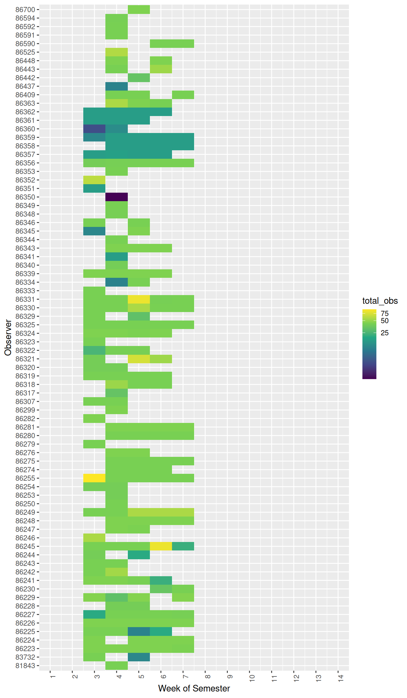
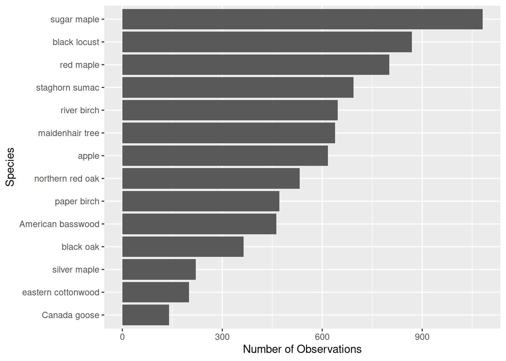

Semester Overview
1 Semester: 2026.2
Estimated semester start date: 2026-08-24
There are 7738 total observations this semester.
Number of observers: 78
Total observations: 7738
Download all observations from this semester (CSV)
The NNID in the table and figures below is an anonymized individual observer ID.
2 Observer Overview
3 Weekly Observations Heatmap
The figure below visualizes the number of observations made by each observer during each week of the semester.

4 Phenology Observations by Species

5 How observation grades are calculated
The estimated start of this semester is August 24, 2026. The grading period is the 10 weeks that follow, through November 01, 2026.
Fall starts on the first Monday on or after August 23. Spring starts on the Monday of the week that contains January 25. Each grading week is a standard Monday–Sunday ISO week beginning on that Monday.
A student’s grade uses only Leaves observations inside that window:
- Any Leaves visit in a Monday–Sunday week fills that week. Extra visits in the same week do not add points.
- The grade is 100 times the number of filled weeks, divided by 10. Ten filled weeks is 100%.
- Visits after week 10 do not add points.
The weekly heatmap shows every observation across the full 14-week semester calendar. The grade only counts Leaves visits in the first 10 weeks.